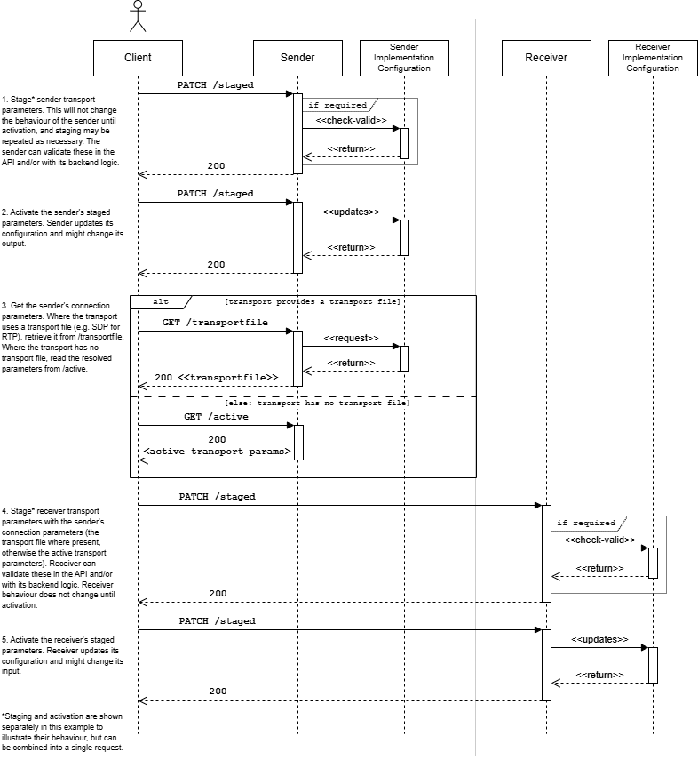

AMWA IS-05 NMOS Device Connection Management Specification: Overview
Introduction
AMWA IS-05 specifies how to allow a Device in an NMOS compatible system to connect to other Devices, by means of the Devices' Senders and Receivers.
The Specification includes:
- RAML and JSON Schema definitions, with supporting JSON examples
- This documentation set, which provides:
- An overview of the API and how it is used.
- Normative requirements in addition to those included in the RAML and JSON schemas specifying the API.
- Additional details and recommendations for implementers of API providers and clients.
- Information about compatibility between different API versions.
IS-05 is intended to be used in conjunction with an IS-04 NMOS Discovery & Registration deployment; however it has been written in such a way to provide useful functionality even in the absence of such a system.
The terms 'Node', 'Device', 'Sender' and 'Receiver' are used extensively in this documentation set. The NMOS Technical Overview and the NMOS Glossary define these and other common terms that have specific meanings in NMOS.
Use of Normative Language
The key words "MUST", "MUST NOT", "REQUIRED", "SHALL", "SHALL NOT", "SHOULD", "SHOULD NOT", "RECOMMENDED", "MAY", and "OPTIONAL" in this documentation set are to be interpreted as described in RFC 2119.
API Structure
The API provides a mechanism to change the settings associated with logical Senders and Receivers which abstract the implementations of different IP based transport protocols. The primary use case for this API is in the control of Senders and Receivers which implement the Real Time Protocol (RTP) transport type. WebSocket and MQTT are supported since v1.1, and the API is extensible to support control of other protocols.
Resources
Each Sender or Receiver implementation has a common set of paths as follows.
Constraints
The /constraints endpoint describes any restrictions associated with each parameter which is defined for a given transport type, and permit, for example, parameter values to be restricted to a set of valid IP addresses.
Staged
The /staged endpoint provides the means to make changes to settings associated with a Sender or Receiver. These changes can be applied to the underlying implementation immediately, or at a scheduled time signalled in the HTTP request.
Active
The /active endpoint reflects the current running configuration of the underlying Sender or Receiver. When a set of staged settings is activated, these settings transition from /staged' into the/active` resource.
Transport File
Where a transport protocol is accompanied by a file format which advertises connection parameters, this can be exposed via the /transportfile endpoint of a Sender. This provides the means to expose a Session Description Protocol (SDP) file in the case of RTP for example.
Transport Type
The /transporttype endpoint identifies the transport type which is used by this Sender or Receiver. It is intended to enable disambiguation between the parameter sets which can be presented under the other resources.
Single & Bulk Interfaces
The API provides a mechanism to modify settings for an individual Sender or Receiver. This is referred to as the 'single' interface.
The API also provides a mechanism to modify settings for many Senders or Receivers at once which sit within the scope of the API implementation (typically contained by a Node or Device). This is referred to as the 'bulk' interface, and can be used to support 'salvo' operations in capable Devices, as described in Behaviour.
API Interaction
The following sequence diagram shows the interactions between a client and the API.
